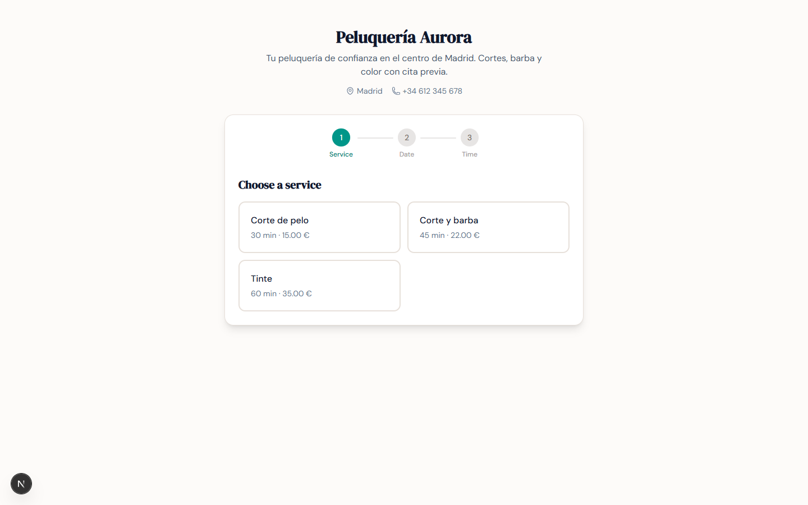
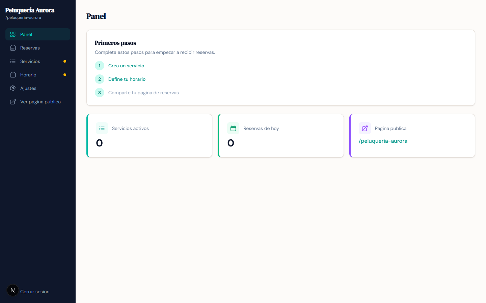
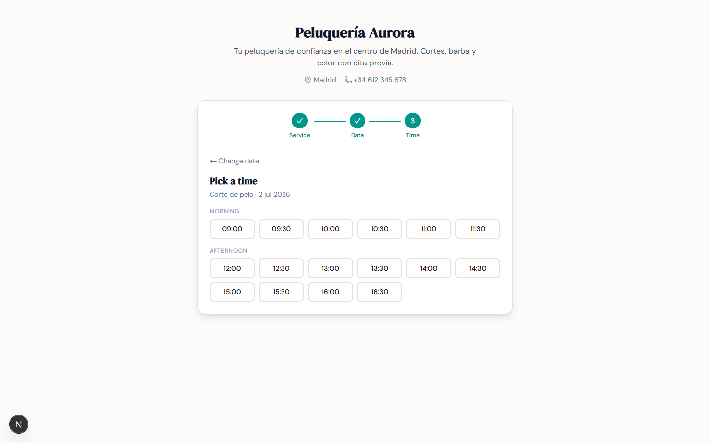
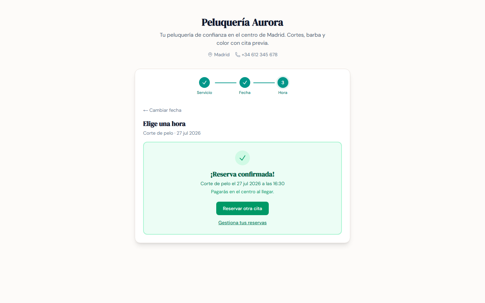
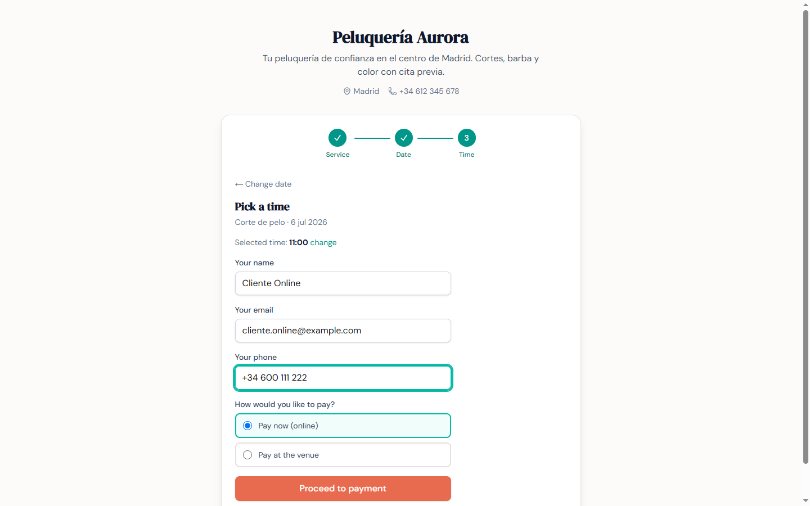
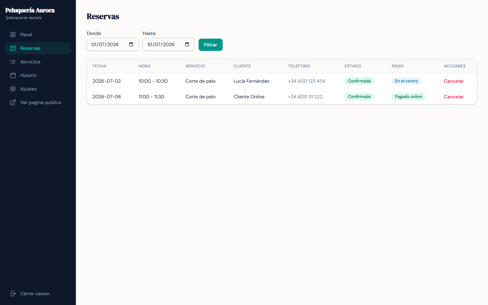
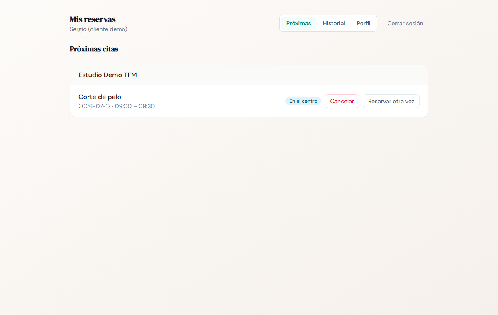
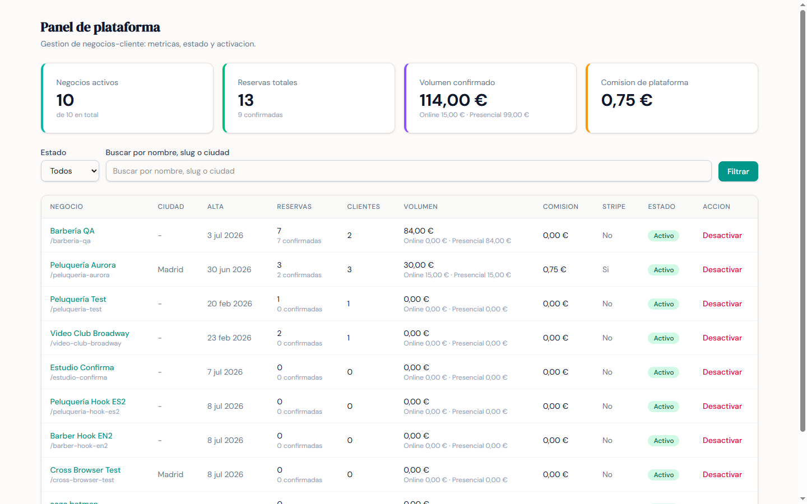

Reservas de cita online para pequeños negocios de servicios. Cada negocio, su propia página.
Un producto real, desplegado — y un caso de estudio sobre desarrollo guiado por IA con la calidad de ingeniería como eje.
▸ reservas-chanantes.vercel.app

Un SaaS de reservas desplegado y usable ahora mismo, no una demo de juguete.
Clean Architecture, 325 pruebas, pagos con Stripe, seguridad OWASP y CI/CD.
Desarrollo guiado por IA + disciplina de calidad = software no trivial y sólido.

El negocio se registra, configura sus servicios y su horario, y publica una URL propia desde la que sus clientes reservan en tiempo real.
/admin — servicios, horario, reservas y cobros/[negocio] — disponibilidad y reserva/my — historial y autoservicio

La disponibilidad se calcula al vuelo (horario − reservas ocupadas) y el hueco se bloquea de inmediato — sin dobles reservas.




El dueño gestiona sus reservas, el cliente se autogestiona en /my, y el operador de plataforma vigila los negocios cliente desde /superadmin.
La regla que lo sostiene todo: el dominio no importa ninguna dependencia de framework. No es declarativo — es verificable, y es lo que habilita una pirámide de pruebas de base ancha.
Dos clientes que piden el mismo hueco en el mismo instante son una condición de carrera clásica. En vez de resolverla con validaciones frágiles en la aplicación, la garantía vive en la capa autoritativa: una restricción de exclusión de PostgreSQL rechaza el solape a nivel físico.
Pirámide de base ancha —dominio y aplicación concentran las pruebas—, habilitada por la arquitectura desacoplada. Con umbral de cobertura, pipeline CI→CD que despliega solo si todo pasa, y E2E en Chromium/Firefox/WebKit: calidad forzada por la herramienta.
¿Se puede desarrollar software guiado por IA sin renunciar a la calidad de ingeniería? Para responderlo, el sistema se construye bajo disciplina explícita — Clean Architecture · DDD · TDD · SOLID — con trazabilidad en planes, revisiones y registro de desviaciones.